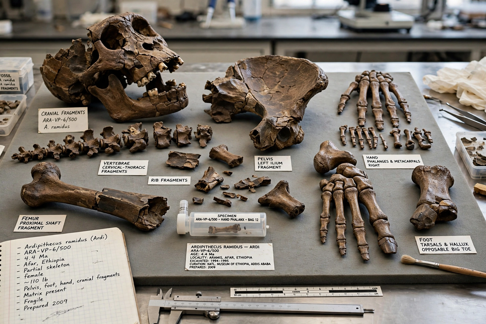

Ardipithecus

Ardipithecus
| Temporal range | Late Miocene to Early Pliocene, 5.8–4.4 million years ago |
|---|---|
| Species | A. kadabba, A. ramidus |
| Known from | Middle Awash, Afar Region, Ethiopia |
| Family | Hominidae |
Ardipithecus is a genus of extinct hominid from the Afar Region of Ethiopia, widely regarded as one of the earliest genera in the human lineage following the divergence from the ancestors of chimpanzees. Two species are described: Ardipithecus kadabba, dated to about 5.2–5.8 million years ago, and the better-known Ardipithecus ramidus, dated to 4.4 million years ago. The genus name combines ardi, "ground" or "floor" in the Afar language, with the Greek pithēkos, "ape".
Discovery
The first Ar. ramidus fossils were found in 1992–1993 at Aramis in the Middle Awash valley by a team led by Tim White, including Gen Suwa and Berhane Asfaw; the species was named in 1994. The centrepiece of the collection is a partial female skeleton, ARA-VP-6/500, nicknamed "Ardi", recovered in crushed and scattered condition over several field seasons. The Ardi skeleton and the wider assemblage — more than 110 specimens from at least 36 individuals — were published in a coordinated series of papers in Science in October 2009, fifteen years after the find, and the discovery was named the journal's Breakthrough of the Year.
Description
Ardi is estimated to have stood about 120 cm tall and weighed around 50 kg. Ardipithecus shows a mosaic anatomy: the pelvis is restructured in a way consistent with upright walking, yet the foot retains a divergent, grasping big toe adapted for climbing — indicating an animal that walked bipedally on the ground but still moved through trees on all fours. The hands lack the specialisations for knuckle-walking seen in chimpanzees and gorillas. Canine teeth are small and relatively unspecialised in both sexes, which the describing team interpreted as evidence of reduced male–male aggression and a social system unlike that of modern apes. Cranial capacity was small, around 300–350 cm³.
Palaeoenvironment and significance
Fossil fauna and plant remains associated with Ardipithecus indicate a wooded habitat rather than open savanna, reinforcing the view — also suggested by Orrorin and Sahelanthropus — that bipedalism evolved in woodland settings. The anatomy of Ardipithecus has been used to argue that the last common ancestor of humans and chimpanzees was not as chimpanzee-like as long assumed, and that living apes have themselves evolved substantially. Ar. kadabba, described mainly from teeth and jaw fragments from the late Miocene, may represent a stem population close to the divergence itself.
See also: Sahelanthropus · Orrorin · Australopithecus · Human evolution